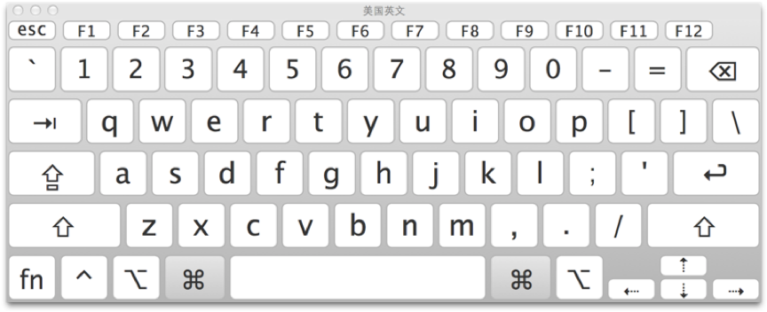
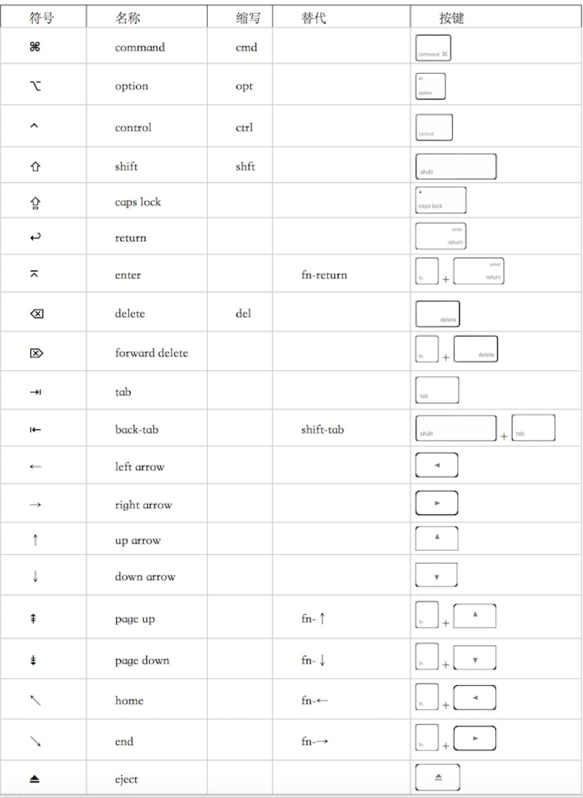

公司让统一换成mac本，所以被逼无奈，开始mac使用的新旅程，一开始还挺担心用不来，不过后来真正用户起来，发现和windows实际上没有太大的差别，下面是我在学习使用过程中整理的资料，足够mac的上手和工作了，至于mac的深入和快捷使用，可挖掘的东西很多，有人还专门出书呢。
mac了解
桌面主要是两部分：菜单栏、Dock栏


快捷键
我这边常用的快捷键：
窗口类：
Command+M: 最小化窗口
Command+H: 隐藏窗口(我基本用这个代替最小化窗口，因为最小化窗口会在dock栏显示一个新的图标、占地方)
Command+T: 在浏览器中打开新的选项卡
Command+W: 关闭窗口，程序并没有真的退出，相当于点击了左上角的红叉叉
Command+Q: 退出程序，真正退出了
Command+option+esc: 强制退出程序，在程序无响应时使用，类似于ctrl+alt+del
文件类：
Command+c：复制文件
Command+v：粘贴文件
Command+a：全选
Command+s：保存
Command+f：搜索
Command+option+v：相当于剪切(配合Command+c使用)
Command+option+C：复制文件路径
option+command+C：复制文件路径
系统类：
Command+Space：来调用Spotlight(也可点击右上角的“放大镜”图标)
Command+Shift+3：全屏截图
Command+Shift+4：区域截图
Command+tab：在应用程序间切换
Command+`：在同一应用程序的窗口间切换
More info: 官网快捷键大全
触摸板
mac的触摸板用熟了，效率杠杠滴，具体的触摸板动作设置可以在“系统偏好设置-触控板”进行设置和查看。
More info: 官网触控板手势
软件安装
熟悉基本操作后，就开始安装基本的办公软件了。
Jdk
下载-安装-配置环境变量
MAC安装JDK及环境变量配置
现在都不用配置环境变量，安装完成后，自动配置，如果一台电脑装了多个版本的jdk，则需要通过配置环境变量指定一个。
Maven
下载-解压-配置环境变量
在mac安装maven的方法
因为是免安装的，所以得配置下环境变量
git
git图形化工具
mac没有tortoiseGit，不过有其他的，不过想了想还是不装了，初次导入工程时使用git命令，后面用IDEA导入后，就直接用IDEA自带的git来进行图形化操作了。
IDEA
官网下载-配置hosts-粘入激活码
IntelliJ IDEA 2018 破解过程
激活码获取，先配置hosts，再打开IDEA输入激活码即可，不过这种有效期比较段；还可以通过补丁包激活的方式，这种有效期到2099年。
mac上IDEA快捷键,不过我是吧keymap设置为和windows上一致，所以快捷键保持不变，这样开发起来就无缝对接了。
UE
下载-激活
本来打算安装ue，后来想象sublime可以通过插件扩充功能，更加强大,UE破解
Sublime
下载-记不激活都行-安装各种插件
sublime新手使用
激活码,得先配置host。
支持gbk编码文件
Navicat
官网下载，直接安装，因为这个激活挺费劲的，所以我就没激活。
后来到期之后，使用的无限试用,和激活也没啥区别。
Beyond-compare
git配置bc为默认比对工具
IDEA配置bc为默认比对工具
Mac OS系统下Beyond Compare破解方式相当于是无限试用，每次删除那个文件。
Xmind
安装的zen版本，一直试用，满足平常需要了。
Nodejs
hexo
画图软件
Mac上没有visio，所以搜了一下，推荐亿图图示、OmniGraffle、auxre、processon等。
后来发现一个免费的在线画图：draw.io，支持中文、visio的导入导出，还不用注册，果断使用这个了。
Axure
Project
Mac上类似于project的OmniPlan,并且可以打开mpp文件：
OmniPlan安装破解
OmniPlan使用说明
OmniPlan导入导出为project